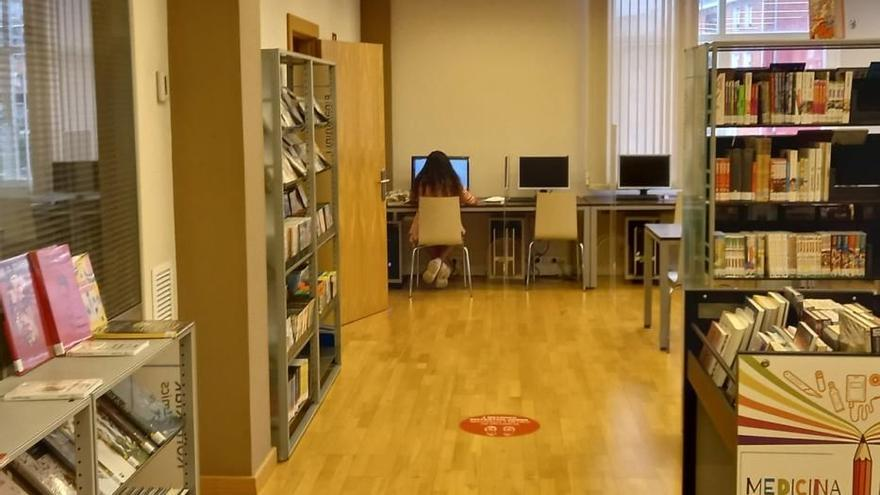

DUDAS FRECUENTES

¿Cuantos días puedo tomar un libro prestado?
Puedes llevarte un libro prestado por una duración de 14 días.
¿Cuantos libros puedo tener prestados al mismo tiempo?
Se pueden tener hasta un total de 3 prestamos activos al mismo tiempo.
¿Hay algún tipo de penalización si devuelvo un libro tarde?
Si, en caso de una devolución tardía el usuario en cuestión no podrá pedir otro libro prestado por una duración de tiempo equivalente al tiempo que estuvo el ejemplar sin devolver.
¿Cual es el horario de apertura de la biblioteca?
De lunes a viernes de 10:00 a 13:00 y de 16:00 a 19:45. Los sábados y domingos la biblioteca se encuentra cerrada.
¿Se necesita carné para entrar a la biblioteca?
No se necesita carné para entrar a la biblioteca, pero si se necesita para realizar prestamos.
¿Cuando se dan los eventos?
Los eventos son siempre los viernes a las 18:00.